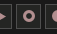
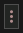

An action is something you do on a channel. To begin, Giada must be put into action recording mode by clicking the record actions button

in the main transport or by pressing the enter key. Giada will then record any gesture coming from your mouse and keyboard, MIDI controllers, or both.On a sample channel, you can record the following:
Once Giada is in action recording mode, sample channels that are available and ready to receive actions turn red. When you are done, disable action recording mode by clicking the record actions button a second time. Any sample channel with recorded actions will have the read actions button  enabled: when pressed, the recorded actions for that channel are played back.
enabled: when pressed, the recorded actions for that channel are played back.
If you need to remove all actions from a sample channel, click the channel's main button and select Clear actions from the drop-down menu, or edit them more precisely in the Action Editor.
On MIDI channels, you can record any type of MIDI event supported by the Piano Roll Editor. First, press the arm button  , then enable action recording mode and start your performance with your MIDI controller. When you are done, disable action recording mode by clicking the record actions button a second time.
, then enable action recording mode and start your performance with your MIDI controller. When you are done, disable action recording mode by clicking the record actions button a second time.
Don't worry if you don't see the recorded notes right away: they will appear once recording has stopped.
If you need to remove all actions from a MIDI channel, click the channel's main button and select Clear actions from the drop-down menu, or edit them more precisely in the Action Editor.
You can also arm one or more MIDI channels without enabling action recording mode. In this case, Giada works as a live effects processor driven by incoming MIDI notes. This is especially useful when you want to play your virtual instruments live through a MIDI controller.
Pressing the record actions button also starts the sequencer. In some cases, however, you may want it to wait and start only when the first action is received. This mode is called record on signal, and you can enable it by clicking the record on signal button

in the main transport.